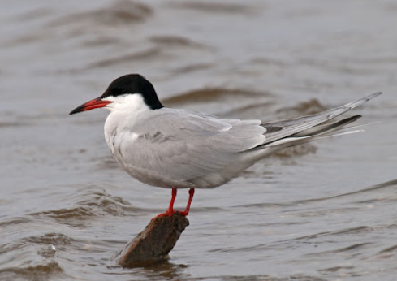

Mazo zīriņu ligzdošanas laikā atpūtniekiem slēdz četru upju grīvas

Lai atjaunotu kādreizējo mazo zīriņu (sternula albifrons) populāciju, līdz 31. jūlijam apmeklētājiem slēgs četras grīvas - Gaujas, Ķikana, Irbes un Lūžņas grīvu.
Lasīt rakstu